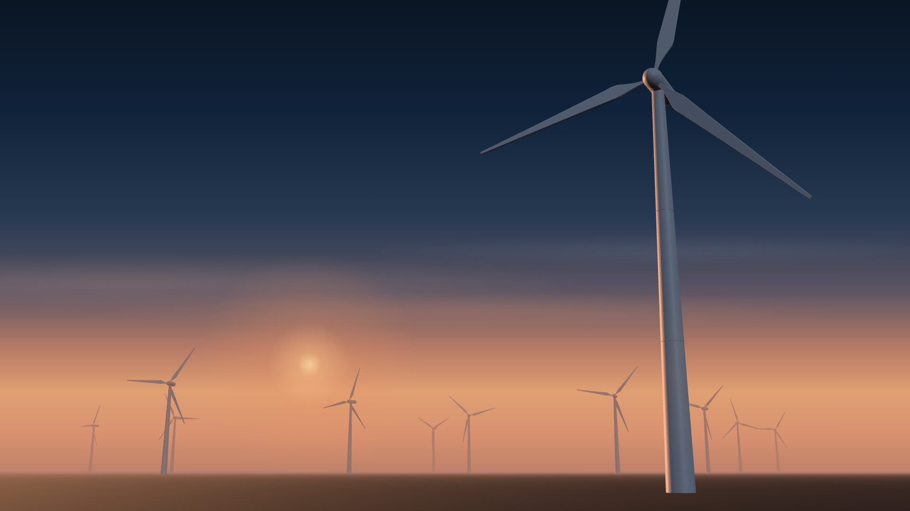

Rozpoznanie
Rozmawiamy o objawach, przeglądamy schemat instalacji i ustalamy punkty pomiarowe.

Analizy jakości energii, testy NC RfG i nadzór instalacji elektrycznych dla zakładów przemysłowych i farm OZE.
Od rozdzielni w hali produkcyjnej po farmę wiatrową. Wszędzie tam, gdzie prąd musi płynąć bez zakłóceń.
Poszarpany przebieg zamiast sinusoidy. Tego nie pokaże multimetr.
Każda harmoniczna ma swoje źródło: napędy, falowniki, zasilacze impulsowe. Mierzymy je osobno i wiemy, gdzie szukać.
Kompensacja mocy biernej, filtry, korekta nastaw zabezpieczeń. Wynik sprawdzamy kolejnym pomiarem.
Stabilna praca, bezpieczne urządzenia, spokojne odbiory techniczne. I niższe koszty energii.
Dziewięć obszarów, w których pracujemy na co dzień. Wybierz, żeby zobaczyć szczegóły.
Analizatorami sieci rejestrujemy wahania napięcia, przepięcia, harmoniczne i współczynnik mocy. Wskazujemy źródła zakłóceń i sposób ich usunięcia.
Analizujemy dane z baterii kondensatorów: jak kompensuje, czy nie traci wydajności, czy nie zbliża się awaria. Mniej opłat za ponadumowny pobór energii biernej.
Testy zgodności dla certyfikacji elektrowni odnawialnych. Prowadzimy obiekt do ostatecznego pozwolenia na użytkowanie.
Mierzymy, gdzie i kiedy zakład zużywa energię. Pokazujemy, które zmiany obniżą koszty operacyjne najbardziej.
Konfiguracja sterowników polowych, programowanie nastaw zabezpieczeń i uruchamianie stacji transformatorowych. Indywidualne limity napięcia i mocy ustawiamy w oprogramowaniu pod Twoją instalację.
Regularne przeglądy, pomiary i konserwacja stacji. Usuwanie usterek i przygotowanie urządzeń do eksploatacji.
Farmy fotowoltaiczne, wiatrowe i biogazownie: monitoring pracy, serwis, przeglądy okresowe i raporty produkcji energii.
Nadzorujemy inwestycje energetyczne i budowlane w zakresie elektryki: zgodność z projektem i normami, odbiory techniczne.
Pomiary instalacji elektrycznych w firmach i gospodarstwach domowych. Także tam, gdzie po montażu fotowoltaiki falownik zaczął się wyłączać.
Cztery etapy. Na każdym wiesz, co mierzymy i po co.
Rozmawiamy o objawach, przeglądamy schemat instalacji i ustalamy punkty pomiarowe.
Analizatory sieci rejestrują parametry w rozdzielni, tak żeby objąć typową pracę zakładu, a nie jedną chwilę.
Wyniki odnosimy do normy EN 50160 i warunków przyłączenia. Raport mówi co, gdzie i dlaczego.
Filtry, kompensacja, nastawy zabezpieczeń. Po zmianach mierzymy ponownie i porównujemy.
Wybierz obiekt i kliknij punkt pomiarowy. Zobaczysz, co dokładnie sprawdzamy w każdym miejscu.
Odpowiedz na trzy pytania, a protokół zgłoszenia wypełni się sam. Oddzwonimy, żeby ustalić termin.
Zgłoszenie pomiaru
GLOBAL QUANTUM sp. z o.o. sp. k.
ul. Legionów 18